記録・学習・生活の小さな困りごとを解決する、ログイン不要・端末内完結のアプリを作っています。
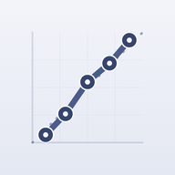
Calibrate: Forecast JournalBrier score and calibration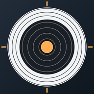
DecimalTarget: Shooting ScoreAir rifle & pistol group log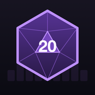
DiceOdds: RPG Dice CalculatorExact odds, advantage, damage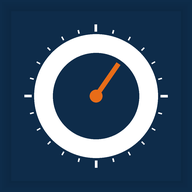
DuctWheel - HVAC Duct SizerRound & Rectangular Sizing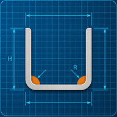
FlatBend 板金 曲げ展開計算K係数と展開全長を即計算・mm/inch対応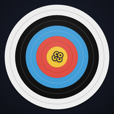
Gold Archery Score & PlotTrack rounds, groups & classes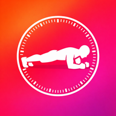
Holdly – Isometric TimerPlank & Wall Sit · auto +5s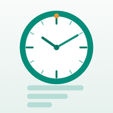
HoursLedger: Work HoursShift & overtime timesheet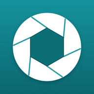
Macro Photo Calc: DOFDepth of Field & Diffraction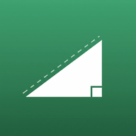
SlopeCalc: Grade & RampDrainage, ADA & pitch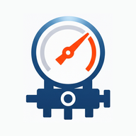
Superheat 冷媒チャージ計算過熱度・過冷却度とPT線図を即計算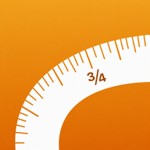
TapeCalc: Feet-Inch FractionBuild & framing calculator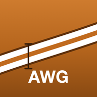
WireGauge: DC Wire SizeVoltage drop & AWG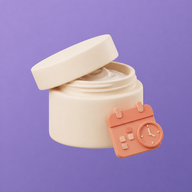
あけたよ コスメ管理・化粧品の使用期限開封日を入れるだけ。コスメ期限を自動計算＆通知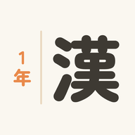
かんじ1年生 小学1年の漢字ドリル小学校の漢字を 読み・書き・カードで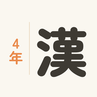
かんじ4年生 小学4年の漢字ドリル小学校の漢字を 読み・書き・カードで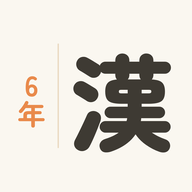
かんじ6年生 小学6年の漢字ドリル小学校の漢字を 読み・書き・カードで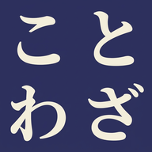
ことわざ学習：クイズと暗記カード国語や受験対策に｜苦手を間隔反復・広告なし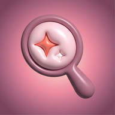
つぎケア 白髪染め・サロンの周期リマインダー美容ルーティンの次いつを、適期に通知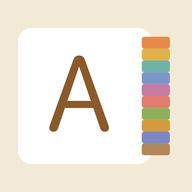
アルファベットずかん 幼児の英語なぞり書きABCの大文字小文字を書く入学準備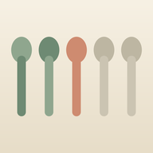
スプーンフル スプーン理論で気力と疲労を見える化する手帳エネルギー残量を記録して燃え尽きる前に休む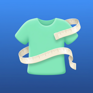
マイサイズ手帳 服の実寸で通販サイズ失敗ゼロ洋服の採寸メモ 試着なしでサイズ感が分かる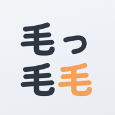
毛管理職 鼻毛・耳毛・眉の清潔感ケア放置すると伸びる。整える身だしなみ習慣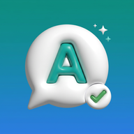
言えたノート 英会話レッスンの言い間違い復習オンライン英会話を録音つきで訂正・言い直し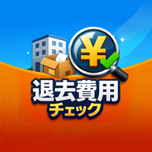
退去費用チェッカー 敷金・原状回復・賃貸の相場診断その請求、妥当？交渉と減額を後押し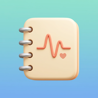
通院ノート 頭痛・発作・症状を記録する体調管理前回の受診から今日までを、主治医に1枚で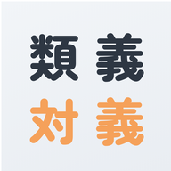
類対ドリル 類義語・対義語クイズ語彙力・言い換え力アップ 大人も漢検も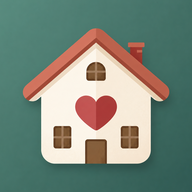
養育費まもり台帳 不払い記録・催促・時効養育費と面会交流の記録を証拠に残す